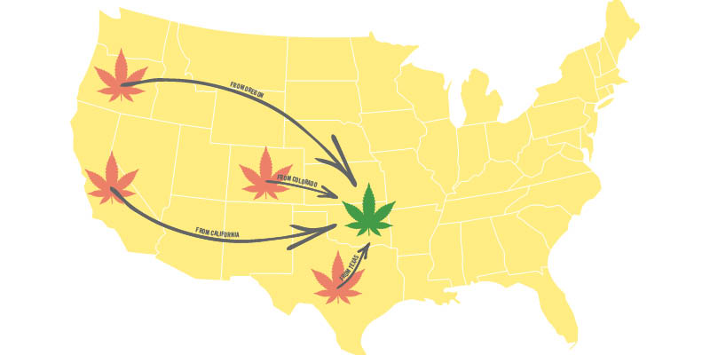

Yes we cannabis
Tulsa’s weed dealers talk SQ788

Matt Chinworth
Oklahoma voters approved State Question 788 in June, legalizing medical marijuana. Since then, industry hopefuls have applied for more than 1,200 dispensary, cultivation, and processing licenses. Applicants can expect their requests to be processed sometime next year, when Oklahoma’s legislative session begins in January. Until then, applicants won’t know what regulations they will face, what kinds of products they can offer, and what testing standards will be like.
We won’t see any storefronts for a while, but that doesn’t mean cannabis is impossible to come by in Tulsa. Even with Oklahoma becoming a medical marijuana state, the black market is booming. Much ink has been spilled over the effects the new law will have on employers, medical professionals, and law enforcement, but what about people who are already involved in the cannabis trade?
While some dealers are apprehensive of the changes, others suspect medical marijuana will increase supply to the black market. Most of the people I talked to think cannabis should be legal, but until then, they’re going to play the game by the old rules as long as possible.
I sat down with four anonymous sources to learn more about the Tulsa weed market and see what dealers are saying about SQ788.
Anonymous Dealer #1
Selling for: 5 years
Sells: Unspecified amount
Weed origin: California, Oregon, Colorado
SQ788: Voted yes
Fraser Kastner: How much would you say you sell per month?
Anonymous Dealer 1: I don’t know if I’m comfortable answering that.
Kastner: Do you have any thoughts on State Question 788?
AD1: Honestly, I haven’t been keeping up with it. [. . .] It was funny when it passed, because everyone was calling me, all my buddies who are doing the same thing. Everyone’s freaking out, because we’re like, “What are we gonna do?” My other buddies are texting me like, “Get a job!” [laughs].
I think everyone’s concerned. Everyone who’s doing what I’m doing is concerned. It’s like, we’ve been doing this forever and we’ve been working hard. Selling drugs is easy money, but it takes a lot to get established with good people and get comfortable with it. And that’s the big thing—getting all the clientele you trust, that’s the hardest part.
And then you’re gonna see people move in here [. . .] all these big people trying to make a bunch of money, and then it’s gonna push us out, is what everyone is thinking. But I don’t really know, because it’s like, it has a black market because that’s the culture of it. Everyone I sell to is like my best friend. I’ve known people for, like, five years that never had to get it from anywhere else because I’ve had it. And it’s the same for me.
Kastner: And at least the idea behind some of the legislation was that the penalty of getting caught with it without a medical license was gonna be much, much lower. It would be like a fine as long as you could come up with some excuse, and so it’s possible that some people might not bother. Why should they have to be on a government list to get some weed?
AD1: Exactly. [. . .] Me and one of my buddies, we were talking about it and we read up on it. The way they had it written out—this was a month or two ago, so I don’t know if they’ve changed it—but it almost made it seem like it would be easier for us [. . .] If they’re gonna be documenting who all has med cards, who all is using it, a lot of people aren’t gonna want that on paper for their career.
[. . .] So then they’re gonna of course stick with the black market. They’re gonna hit up people like us, and then we can deliver it pretty much 24/7. I’m always on call.
Kastner: Well it’s kind of a Catch-22 for people who want to make the law more restrictive. More restrictive laws just create the need for a black market.
AD1: My concern [is] if recreational gets passed. [. . .] Because now in Oklahoma, I can just not answer you for a day [laughs]. It’s like, “Fuck you—what are you gonna do?” But now it’s gonna get more competitive. It’s gonna be some price match shit. I’m looking at dispensaries’ prices and I’m like, “Fuck, dude, I gotta lower this?”
Kastner: Did you vote on SQ788?
AD1: Yeah—I voted yes.
Kastner: You voted for it?
AD1: Is that weird? [. . .] I voted yes on it, because in the grand scheme of things they can make a bunch of tax money and Oklahoma fixes some shit and does something good with it. Like schools, because Oklahoma’s so fucked right now. The only thing that sucks about it is bigger companies coming in. I like the idea that all the weed in Oklahoma has to be grown in Oklahoma. I think that’s great, and I think that’s really cool. But like, a bunch of people from Colorado already have a bunch of money and they’re stepping on our toes.
Kastner: Can you imagine a reason people would buy from you even if there were dispensaries?
AD1: I was talking to some people I sell to, and they were like, “Yeah, it’s cool, but we still like the delivery thing.” And I deliver. Unless the dispensaries start doing some UberEats type shit, that’s when I’m gonna be like “Fuck, it’s over.”
I’m sure when it first happens, everyone’s gonna want to experience going and buying it. And then maybe they’ll come back and be like, “Yeah, it’s not that great.” If they restrict the potency of it, that’s kind of sabotaging it itself. If they do that, I don’t have anything to worry about, because I can get wax and all that at the same potency [. . .] at the same price the dispensaries are selling it. If they restrict it pretty hard, they’ll have a black market. If they really let go of it, then that’s when I’ll be like, “Fuck.”

Anonymous Dealer #2
Selling for: 4-5 years
Sells: 4 oz. every 2 months
Weed origin: Colorado
SQ788: Didn’t vote
Kastner: Do you have any thoughts on State Question 788?
Anonymous Dealer 2: I didn’t vote on it. But I’m happy it got passed. I didn’t vote because I figure it was kinda like voting against your own business, in a way. But at the same time there was no way I was gonna vote against it because I think it should be passed.
Kastner: So you didn’t want to vote against your own interests?
AD2: There was that, and I didn’t fully read the whole bill. I also don’t keep up to date with politics a whole lot. So I knew about it and I was hoping it would get passed. But financially, it felt like I was voting against my own business.
Kastner: What about recreational?
AD2: That would be a much bigger change. I still probably won’t vote on it. Again, if it gets passed, that’s great. [. . .] I’m not completely sure what I think of that whole thing. I mean, this isn’t my main income or anything—if it was, I would have more thoughts about it. But I support everybody who’s trying to get it to go recreational.
Kastner: Would you sign a petition a recreational petition if you saw one?
AD2: Probably not. But I also don’t typically sign petitions for things. It’s not gonna hurt me that bad if I quit selling. It’s not that big of a deal. It’s always just been a small extra side income. Sometimes I sell more and sometimes I sell less.
Anonymous Dealer #3
Selling for: 4 years
Sells: 2 oz./week
Weed origin: Colorado
SQ788: Voted yes
Anonymous Dealer 3: I just try to sell to heady people, essentially.
Kastner: What people?
AD3: Heady. People who like, you know, hallucinogens—or just chill people.
Kastner: So, even if it’s someone you’ve known for a while, you won’t sell to them if you think they’re sketchy.
AD3: If I think they’re sketchy, I won’t, no [. . .] there’s the etiquette, or like, you’ve gotta be vouched for. If it’s like, “Hey, I’ve got a brother who’s got an aunt with back problems or whatever and she doesn’t want to take pills,” I’m like, “Yeah, absolutely.” And she’ll come over and we’ll get it all worked out. That’s another reason. The reason I smoke is I got constant back pain. [. . .] I’ve got friends who did a lot of prescription drugs and got addicted to harder stuff, and it just went to bad places. I’ve done everything to just avoid that shit.
Kastner: So, do you have any thoughts on State Question 788?
AD3: I’m all for it, man. Especially with my parents. They started taking CBD and my dad said their prescription use dropped by a third. Which is great, you know?
That sort of stuff would most certainly help my dad, because he’s had like 13 back/neck surgeries; and my mom’s had a few neck operations, and for a while she was going to bed just drinking alcohol and (taking) morphine. And my mom’s a really loveable woman, but my dad told me, “Hey, you’re mom would get a little aggressive sometimes.” Her mood would change.
The state would be turning a massive profit. We’d get out of our debt, our deficit. Because the oil boomers, they didn’t think about the bust. They just started doing fracking and anything to keep a profit going, and now we’re at a fucking financial crisis. Definitely, if they can legalize recreational and tax an extra five, six percent [. . .] I support it. Even if, at the end of the day, it makes what I’m doing obsolete, what I’ll probably do is find a way to work at a grow operation. I don’t mind sitting, cutting plants for eight hours a day listening to music or learning about how these things work. I’d be willing to take a job that will give me that experience and be around something that I like to be around.
Kastner: So you’ll stop selling if it’s fully implemented?
AD3: If it’s fully implemented, yeah. I wouldn’t doubt there would be still a market, but at a cheaper rate because there will be some people who don’t want to pay taxes. But then it comes to the whole quality control because, if I’m selling it, it needs to be as good or better than what’s at a dispensary. I think that will be a major issue when recreational becomes legal. That will probably be the final nail in the coffin. But I’ve been prepared for this for a few months. And business has still been going. [Phone dings.] Y’see, right there.
Kastner: Are people texting you right now for weed?
AD3: Yes! [laughs]
“I’m not threatened by [legalization] at all. I really stand behind marijuana for the health aspect. I’m not in it to get fucked up. I’m not in it to be a big baller. I’m not trying to make a million dollars.”
Anonymous Dealer #4
Selling for: 8 years
Sells: 2 lb./month
Weed origin: Oregon, California, Colorado
SQ788: Didn’t vote
Kastner: Mainly we’re just looking for local dealers and their reaction to what’s been going on.
Anonymous Dealer 4: Market’s flooded. End of story. [. . .] I’ve already got more, different strains of weed than I ever have carried. And then I also have gummies, cartridges, honey bears.
Kastner: How long have you been selling?
AD4: I’m not sure when I started [. . .] at least 2010. Mostly weed products. If someone requests, I might be able to scare up some mushrooms or acid.
One of my vendors, she even said to me, “I don’t understand why you don’t sell acid.” I felt like I just got all the packaging and branding and everything for this down pat. I don’t know if you saw, but I got those pop-top containers.
Kastner: I was gonna ask about those.
AD4: The little blue ones are supposed to carry an eighth, the green ones carry a quarter, and the silver are supposed to be a half. Of course it depends on the strain and how big the nugs are.
Kastner: So, right now you’re running something like an underground dispensary.
AD4: Like, a really small one. When I lived in [Colorado] I worked in a dispensary. I learned different ways of how to roll things, how to fill cones, all the little techniques that you learn when you’re actually in the business. And I have a respect for that because I spent most of my childhood in healthcare, or in the hospital. I would like to keep a level of professionalism to it.
Kastner: How much do you sell?
AD4: I’m not a really big seller. I have a lot of clients that just come through and get eighths and quarters. [. . .] I always try to know the names of the strains. [. . .] Some folks who grow up in a place like this, where it’s not been legal or they just don’t have that much experience with the drug, I’ve heard say, “Whatever, weed is weed.” And I’m like, “Well, if you understand how the plant works and how it interacts with your brain. . .” There’s a lot of factors. Every single person is different.
Kastner: I mean, there are hundreds of substances, and they’re present in different amounts in different strains—right?
AD4: Yeah, and just understanding the basics between a Sativa and an Indica. And then the fact that [. . .] 80 percent of the stuff out there is hybrid, and [knowing] how much of one or another it is.
Kastner: How many strains do you have in stock right now?
AD4: Like, five? Between five and eight. I don’t have them all open is the thing.
AD4 shows me their weed drawer. It contains various strains weighed out in different amounts in Tupperware containers, as well as a few vacuum-sealed bags of weed.
AD4: This is the one that was unmarked, so I’ve just been calling it Mystery. This one’s Blackberry.
Kastner: How much weed am I holding right here?
AD4: I think that’s a half-pound, but it might not be. If it’s less, he gave me more of the other. Altogether from that guy I get a pound, usually twice a month. That’s a rough estimate—it depends on how fast it goes. The outdoor usually does go faster, just because a lot of people are limited for funds. Some people are like “Hey, gimme the best ya got.” But a lot of people are wanting that $30 eighth. And it’s not schwag. It’s still really good kind bud. It’s just because it was grown outdoors I can sell it for cheaper.
Kastner: Where does your weed come from?
AD4: I have four different vendors. Some of them get it from California or Colorado. My direct guy that mails to me is in Oregon. So all over, really. My homegirl who’s in town who gets me indoor, she gets it from a few different places. It really just depends.
Kastner: What are your thoughts on State Question 788?
AD4: I’m just excited about us having more selection. I’m not threatened by it at all. I really stand behind marijuana for the health aspect. I’m not in it to get fucked up. I’m not in it to be a big baller. I’m not trying to make a million dollars. I’m just trying to get enough to where I can get more products.
When I worked at a dispensary in Colorado, I saw medical marijuana go in place. We would have seniors and people on walkers come in. Now we also had young men who looked totally able-bodied who were obviously dealers. They would come in and get their limit every day. I imagine that’s gonna happen here too.
Kastner: So you’re not gonna stop selling.
AD4: I don’t have any reason to. I don’t have any concerns, really. I have friends and clients who come through every other day—some that come through once a week. The bulk of my clients are once-a-month clients. But my friend who was here just yesterday, he spends at least $300-500 every time he’s here. And he’s a nurse at [redacted]. That’s one of the reasons I want to continue to diversify my product line.
Kastner: Did you vote on State Question 788?
AD4: I didn’t end up voting on it. That day was really busy for me. I also, through working for the Oklahomans for Health campaign two out of the four years, and seeing the work that Green the Vote did and all the other organizations, I knew it was probably gonna pass. Also, my final decision that I’m not gonna try and open my own dispensary. It didn’t end up affecting me, you know?
If I really wanted to bust ass I could, like, go rent a space. But like I said: I’m not trying to make a million dollars. I do have some friends that are interested, but I don’t think they understand the legwork that goes into it—and I don’t want to be the one left holding the bag. No pun intended.
.jpg)
.jpg)